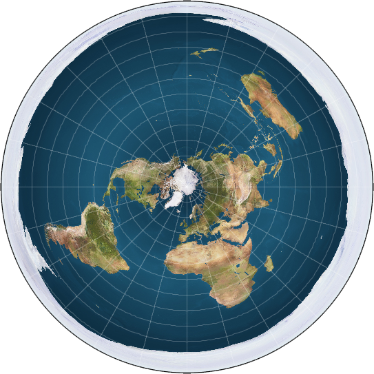

Рождение коспирологии
Теории заговора – Конспирология. Именно благодаря ей, мы привыкли думать, что теория это нечто маловероятное или сложно-доказуемое. Почему я так думаю? Что-бы это понять – вернёмся в прошлое.
Начнём издалека – пять тысяч лет назад. Почему так давно? Когда мы думаем о древних племенах, нам на ум приходят империи Инков и Ацтеков, вот только они существовали в нашей эре. А в третьем тысячелетии до н.э. заканчивался неолит (каменный век) и начинался бронзовый век, образовывались новые культуры, менялись и появлялись новые религии.
Мозг человека устроен таким образом, чтобы искать взаимосвязи и причина-следственные связи даже там, где их нет. Это помогало нам на протяжении всего существования человечества, возможность строить сложные логические цепочки – огромное преимущество, а также причина, по которой люди верили в потусторонние явления и конечно-же в богов. Ра, Гелиос, и малоизвестный, древнеиндийский Сурья. Люди были неспособны понять почему происходят те, или иные природные явления, а значит, это работа кого-то, или чего-то другого.
«Даже там, где их нет», именно поэтому, люди находят абсурдные объяснения для различных случайных событий, или для событий, чьё объяснение контринтуитивно. Например, повседневный опыт говорит о том, что Земля плоская, но, на самом деле это большая сплюснутая сфера. Кроме того, до начала Коперниковской революции, гелиоцентризм: вера в то, что Земля вращается вокруг Солнца, а не наоборот, считалась противоречащей здравому смыслу.
«Заговор» официальной науки
Новая хронология, теория плоской земли, антивакцинаторство. Эти, и многие другие конспирологические теории появились именно по причине того, что объективная реальность как правило, «противоречит здравому смыслу» появляются различные «альтернативные» (лженаучные) течения. Практически все они утверждают, что учёные/политики/спецслужбы искажают объективную истину. В связи с тем, что о «новой хронологии» все забыли, а антивакцинаторство довольно щепетильная тема, мы проговорим про теорию плоской земли. Через него, мы также выявим основные особенности теорий заговора.
Основная особенность всех теорий заговора, в том, что их приверженцы не могут договориться между собой. Перечислим основные концепции плоской земли:
- Земля является плоским диском 40 000 километров в диаметре, с центром в районе Северного полюса.
- Солнце и Луна вращаются над поверхностью Земли. То же самое происходит со звёздами.
- Сила тяжести возникает ввиду того, что Земля движется вверх с ускорением 9,8 м/с².
- Южного полюса не существует. То, что нам кажется Антарктидой — ледяная стена, опоясывающая мир.
- Все фотографии Земли из космоса — подделки.
- Космоса тоже не существует, все запуски спутников и людей — обман.
И на этом всё, остальные пункты того, как должна работать физика в мире плоской земли, остаются объектами споров. К примеру, звёздное небо: на северном полушарии, из-за вращения земли, звёзды движутся по небу против часовой стрелки (вокруг полярной звезды), в южном полушарии она движется в обратном направлении. Это-же касается того, что из северного и южного полушарий земли, наблюдаются разные небесные объекты и созвездия. К примеру - Магеллановы Облака (две галактики, видимые с земли), их возможно увидеть из южной Африки, и Австралии, но невозможно увидеть на территории России. Хотя, согласно карте плоской земли, она расположена между ними.
И все это заблуждения происходят из-за того, что человеку сложно принять то, что он живёт в куда более сложном мире, чем думает. Несомненно, дело не только в этом, недоверие к науке происходит не только потому что объяснения могут «противоречит здравому смыслу», но и из-за недоверия политикам, массовых паник (сожжение 5G вышек), и страха того, чего не понимают, попытки убедить в первую очередь себя, в том, что X на самом деле Y переувлажняют картину мира и становятся самоцелью.
Не гипотеза
Теорию часто путают с гипотезой, итак, что-же такое гипотеза? Гипотеза — предположение, не требующее доказательств. Гипотеза считается научной, если она, в соответствии с научным методом, объясняет факты, охватываемые этой гипотезой; не является логически противоречивой; принципиально опровергаема, то есть потенциально может быть проверена критическим экспериментом; не противоречит ранее установленным законам; возможно приложима к более широкому кругу явлений.
Как правило, гипотеза высказывается на основе ряда подтверждающих её наблюдений (примеров), и поэтому выглядит правдоподобно. Гипотезу впоследствии или доказывают, превращая её в установленный факт (теорию), или же опровергают (например, указывая контрпример), переводя в разряд ложных утверждений.
.png)
Из вышеуказанного следует, что теория рождается из гипотезы, простой пример – У нас есть коробка, с X внутри, если приложить к ней металлический предмет, то, она примагнитит его к себе. Мы можем выдвинуть гипотезу, что внутри этой коробки магнит. На основе этой гипотезы, можно выдвинуть теорию, подкреплённую законами магнетизма.
Доказательная база
Существует два метода доказательства теории, первый: экспериментальный. В идеальных лабораторных условиях, проверяется некое явление. Важным критерием также является то, что эксперимент должен быть проведён таким образом, чтобы его можно было повторить в аналогичных лабораторных условиях. Если-же это невозможно или при повторении результат другой, значит теорию не вышло доказать.
Второй метод: предсказательный. Цель таких теорий в том, чтобы — предсказывать будущее как в наблюдательном (аналитическом) смысле — описывать ход событий, на который мы не можем повлиять, так и в синтетическом — создание посредством технологии желаемого будущего. Образно говоря, существо теории в том, чтобы связывать воедино «косвенные улики», вынести вердикт прошлым событиям и указать, что будет происходить в будущем при соблюдении определённых условий.
Именно про такие теории можно чаще всего услышать «Это просто теория, она ничего не доказывает.» В некотором роде это правда, с первого взгляда такая теория ничем не отличается от гипотезы или отличается? К примеру, с помощью теории относительности были как объяснены многие физические явления, так и некоторые были предсказаны. Одно из них – чёрные дыры и недавняя радиосъёмка чёрной дыры, только подтвердила правильность теории относительности.